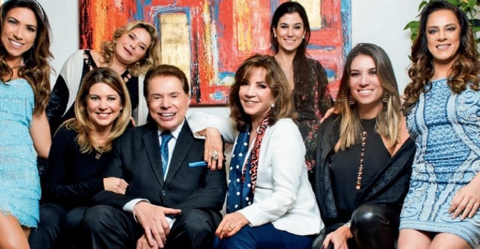

A NOSSA GRANDE HISTÓRIA
A Jequiti nasceu de um faro empreendedor de Silvio Santos, dono do canal de TV SBT. Em suas viagens com a família pelo exterior
notava que sua mulher e seis filhas ficavam especialmente empolgadas com os cosméticos que viam e compravam. Também percebeu que essa vibração
se estendia a outras clientes da loja. o empresário funda a Jequiti, empresa que hoje possui mais de 700 produtos, abrangendo perfumaria (que é o carro-chefe da marca),
maquiagem, itens de cuidados com os cabelos e corpo, linhas masculina e infantil.A Jequiti tem produtos que vão deste R$ 12,50 a R$ 70,00, tendo preços cerca de 8% a 10% menores na gama de cuidados para o banho, do que a Natura, e tem produtos cerca de 20% mais baratos em relação à concorrente em maquiagem. Esta marca tem também um contrato com a Disney, tendo produtos ótimos para a pequenada, tendo autorização para utilizar algumas personagens da Disney bem conhecidas como o Mickey, o Ursinho Pooh e várias princesas: Branca de Neve, Cinderela e a Bela (de a Bela e a Fera). O Grupo Silvio Santos trabalha também com outra marca a Hydrogen, que foi comprada em março de 2006 e é também uma marca de cosméticos com cerca de 72 produtos.